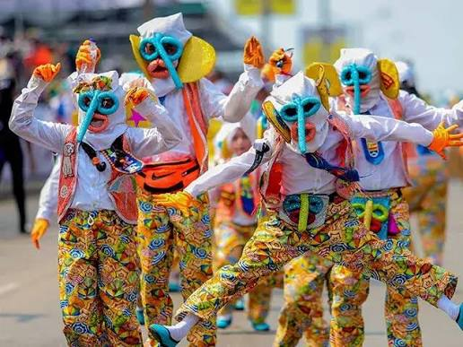

CARNAVAL DE BARRANQUILLA
El Carnaval de Barranquilla es una de las celebraciones culturales más representativas de Colombia. Se caracteriza por sus desfiles, música, disfraces, bailes y expresiones tradicionales de la región Caribe.
En 2003 fue proclamado Obra Maestra del Patrimonio Oral e Inmaterial de la Humanidad por la UNESCO.
